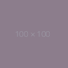

<!DOCTYPE html>
<html>
<head>
	<meta charset="utf-8">
	<meta http-equiv="X-UA-Compatible" content="IE=edge">
	<title></title>
	<style>
		#mapid { height: 500px; }
		#mapid2 { height: 500px; }
	</style>
	<link rel="stylesheet" href="https://unpkg.com/leaflet@1.7.1/dist/leaflet.css"
   integrity="sha512-xodZBNTC5n17Xt2atTPuE1HxjVMSvLVW9ocqUKLsCC5CXdbqCmblAshOMAS6/keqq/sMZMZ19scR4PsZChSR7A=="
   crossorigin=""/>

	<script src="https://code.jquery.com/jquery-3.5.1.min.js"></script>


 	<!-- Make sure you put this AFTER Leaflet's CSS -->
 	<script src="https://unpkg.com/leaflet@1.7.1/dist/leaflet.js"
   integrity="sha512-XQoYMqMTK8LvdxXYG3nZ448hOEQiglfqkJs1NOQV44cWnUrBc8PkAOcXy20w0vlaXaVUearIOBhiXZ5V3ynxwA=="
   crossorigin=""></script>

</head>
<body>
	<div id="mapid"></div>
	<br><hr>
	<div id="mapid2"></div>


<script>


	if (navigator.geolocation) {
                navigator.geolocation.getCurrentPosition(function(position){
                	// console.log(position.coords.latitude);
                	// console.log(position.coords.longitude);
                	// console.log(position.timestamp);
                	// console.log(position.coords.accuracy);

                	var latitude = position.coords.latitude;
                	var longitude = position.coords.longitude;
    				// console.log('latitude: '+latitude);
    				// 

					var mymap = L.map('mapid').setView([latitude, longitude],16);
					L.tileLayer('https://api.mapbox.com/styles/v1/{id}/tiles/{z}/{x}/{y}?access_token=pk.eyJ1IjoibWFwYm94IiwiYSI6ImNpejY4NXVycTA2emYycXBndHRqcmZ3N3gifQ.rJcFIG214AriISLbB6B5aw', {
						maxZoom: 18,
						attribution: 'Map data &copy; <a href="https://www.openstreetmap.org/">OpenStreetMap</a> contributors, ' +
							'<a href="https://creativecommons.org/licenses/by-sa/2.0/">CC-BY-SA</a>, ' +
							'Imagery © <a href="https://www.mapbox.com/">Mapbox</a>',
						id: 'mapbox/streets-v11',
						tileSize: 512,
						zoomOffset: -1
					}).addTo(mymap);

					var marker = L.marker([latitude, longitude]).addTo(mymap);
					marker.bindPopup("<b>Hello world!</b><br>I am a popup. ").openPopup();
                });
    }


				var address = 'Biobio, Coronel';
              	$.get('https:' + '//nominatim.openstreetmap.org/search?format=json&q='+address, function(data){
			       console.log('coords: ');
			       // console.log(data[0]);
			       // console.log(data[0].lat);
			       // console.log(data[0].lon);
			       // console.log(data[0].display_name);

			        var latitude = data[0].lat;
                	var longitude = data[0].lon;


					var mymap2 = L.map('mapid2').setView([latitude, longitude],13);
					console.log(mymap2);
					L.tileLayer('https://api.mapbox.com/styles/v1/{id}/tiles/{z}/{x}/{y}?access_token=pk.eyJ1IjoibWFwYm94IiwiYSI6ImNpejY4NXVycTA2emYycXBndHRqcmZ3N3gifQ.rJcFIG214AriISLbB6B5aw', {
						maxZoom: 18,
						attribution: 'Map data &copy; <a href="https://www.openstreetmap.org/">OpenStreetMap</a> contributors, ' +
							'<a href="https://creativecommons.org/licenses/by-sa/2.0/">CC-BY-SA</a>, ' +
							'Imagery © <a href="https://www.mapbox.com/">Mapbox</a>',
						id: 'mapbox/streets-v11',
						tileSize: 512,
						zoomOffset: -1
					}).addTo(mymap2);

					var marker = L.marker([latitude, longitude]).addTo(mymap2);
					marker.bindPopup("<b>Hello world!</b><br>I am a popup. ").openPopup();


			    });

</script>


</body>
</html>